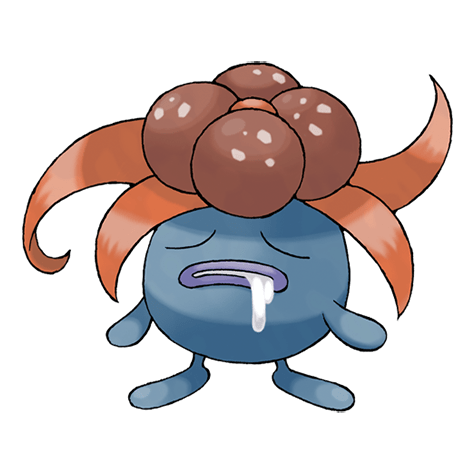

Глум

Глум — Покемон 1 поколения под номером 44 в Покедекс. Обитает он в регионе Канто и относится к Травяному и Ядовитому типу. Глум испускает зловоние из пестика своего цветка. При столкновении с опасностью жуткий запах усиливается. Если этот Покемон чувствует себя спокойно и в безопасности, никакого зловония не происходит.
Тип и слабости:
Травяной
Ядовитый
Эволюция
# 044 Глум
=>
# 045 Вайлплюма